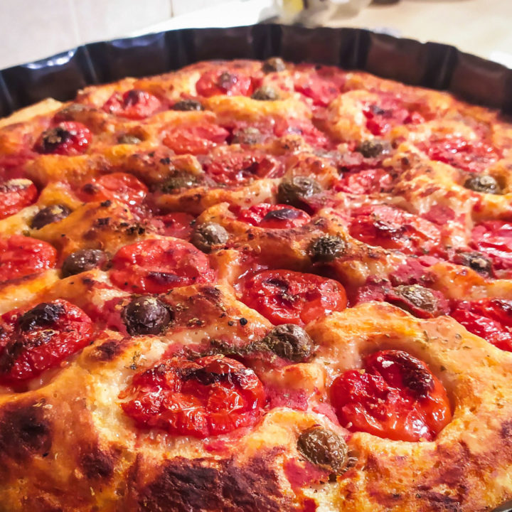

Focaccia Barese

Description
Focaccia Barese is the second most famous Italian focaccia bread from Apuglia town of Bari, after Focaccia Genovese.
Make with the most simple ingredients like semolina flour, cherry tomatoes and olives it's nothing short of epic.
Ingredients
- 500 g 00 flour
- 400 ml lukewarm water
- 2 teaspoons of salt
- 1 pinch of sugar
- ½ block of fresh yeast wad /li>
- 50 ml of extra virgin olive oil
- 12 cherry tomatoes
- 5 tablespoons of tomato sauce
- oregan
- 12 olives
- 1/2 boiled potato (optional)
Instruction
- Pour the flour into a small bowl and make a hole in the center.
- Crumble the yeast in the center and add a pinch of sugar.
- Slowly pour a little water into the center and using a silicone spatula, mix to incorporate the liquid into the flour. Proceed so little by little. When you reach 2/3 of the water, pour the salt on the edge of the bowl, being careful not to put it directly on top of the yeast. Continue to pour in the water and mix slowly until the liquid is completely absorbed into the dough. The dough must have an elastic consistency and not too liquid.
- Cover the bowl with cling film and let it rise in a mid-warm place.
- When the dough has doubled due to the leavening effect (in my case it took about 1 hour), take the iron pan.
- Turn on the oven at maximum temperature (about 240 C °)
- Pour an abundant layer of olive oil into the pan, then using the spatula greased with oil, gently pour the dough into the pan./li>
- Grease your fingers with oil and spread the dough with your hands to cover the entire pan.
- Pour few spoons of tomato sauce on the surface and spread it evenly on the surface.
- After washing and drying the cherry tomatoes, split them in half and place them crushed with the peel on top of the focaccia.
- Sprinkle with plenty of oregano and a pinch of salt, then add the olives.
- Finally, fill a glass of warm water, pour about 1 finger of oil, mix and pour over the whole focaccia.
- Bake on the bottom of the oven for 10 minutes at most.
- After this time, lower the temperature to 200 ° C and let it cook for 30 minutes.
- Your focaccia will be ready when, after this time, it is golden on top and crunchy enough on the bottom.